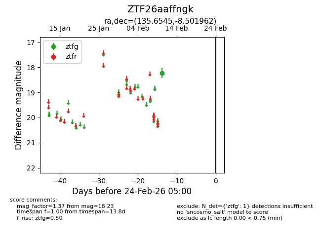
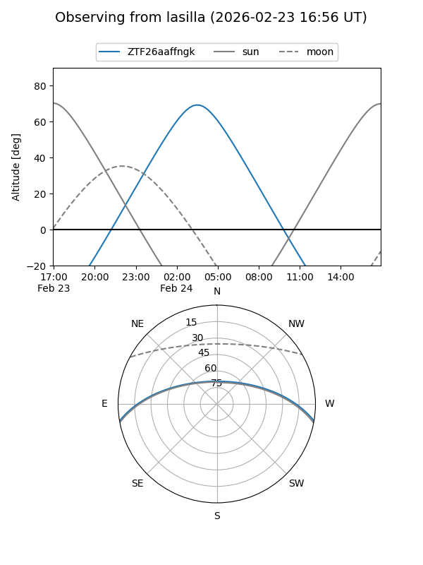
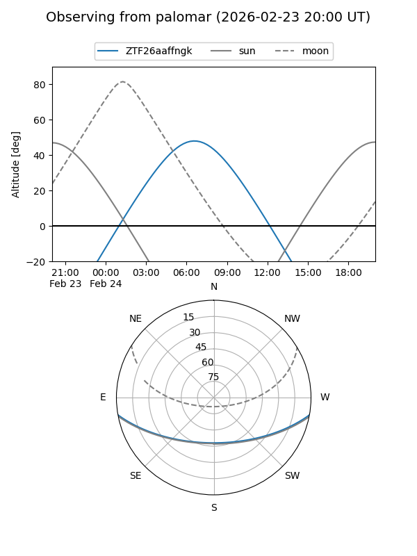

ZTF26aaffngk
Target ZTF26aaffngk at 2026-02-24 09:08
Aliases and brokers:
FINK: link
Lasair: link
ALeRCE: link
alt names
ZTF26aaffngk (ztf,fink_ztf)
Coordinates:
equatorial (ra, dec) = 135.6545,-8.50196
equatorial (HMS+DMS) = 09:02:37.09,-08:30:07.06
galactic (l, b) = (237.2583,+24.16325)
Flags:
Photometry:
last ztfg=18.23
1 ztfg detections
Lightcurve

Visibility


Additional plots